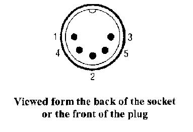
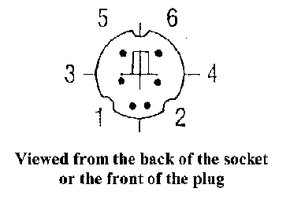

The IBM AT introduced a 101 key keyboard and this soon became the standard for most PC clones. This keyboard had the function keys along the top of the keyboard and a Numeric Keypad at the right hand end. There was also two extra function keys provided on this keyboard. The latest trend is to an Ergonomic Keyboard design like this one from Microsoft.
The first PC keyboards used a 8048 processor chip and an 8 by 11 or 12 matrix. The matrix usually consisted of eight output lines and 11 or 12 input lines. Later PC keyboards used 8049 processors, and the 101 key keyboard needs at least a 10 by 11 matrix to access all the keys.
The keyboard processor uses a look-up table to find a code that represents the key that has been pressed. When the keyboard processor finds a "Key Press" during its scanning of the matrix, it sends a code to represent that key, to a keyboard interface circuit in the computer. In the past many computer systems have used ASCII codes to represent the keys in the matrix but the DOS computers use quite a complex procedure of Press and Release codes.
Until recently, most PC computers used a 5 pin DIN connector on the computers system board and this supplied plus 5 volt and ground to the keyboard, and received data and clock signals from the keyboard, and supplied them to the keyboard interface circuit on the system board.
 The pins on the 5 pin DIN connector are assigned thus:
The IBM PS/2 range of computers introduced a smaller connector, a Miniature 6 pin DIN, and this PS/2 interface is becoming the new standard. Many modern system boards have both a 5 pin DIN and a Miniature 6 pin DIN connector as keyboard interface sockets. Adaptors are available to adapt both types of connectors between the keyboard and the system board. Caution, this is the same connector as used for the PS/2 mouse interface and some system boards have a PS/2 mouse connector on the rear of the board.
 The pins on the PS/2 keyboard connector are assigned thus:
The data from the keyboard is sent to a Keyboard Interface Circuit on the System board in Serial form. Each byte of Keystroke Data is clocked into the interface circuit by a Clock Signal provided by the keyboard itself.
The Keyboard Interface Circuit in the PX/XT (the first generation 8 bit bus DOS computers) is quite different to that used in the AT type and all subsequent types of DOS computers. The interface used in the 8 bit bus computer used a serial in -parallel out shift register to accept the keystroke data and the interface is only single sided. The interface is uni-directional, the keyboard only talks to the computer and the computer does not talk back to the keyboard. The AT computer introduced a bi-directional interface, and used an 8042 microprocessor chip in the keyboard interface to accept the keystroke data, and to provide some of the processing of the data. The basic processes involved are the same for both types of interface.
Note; - As mentioned above, the keyboard also generates release-codes when that key is released but we will discussed this later.
It them uses this number to find the vector, from the Interrupt Vector Table, that points to the Keyboard Service Routine. The Vector is the address of the start of the Keyboard Service Routine.
Other routines within the operating system or applications read the Key Stroke Data from the keyboard Buffer and make use of it.
These keys effect two Status Bytes, stored in low RAM Memory, and these bytes keep track of the state of these keys.
When the Keyboard Service Routine accepts a Scan Code from the keyboard, it consults the two Status Bytes at 417 and 418 hex, to see how the states of these keys, effect the Scan Code and hence the data produced.
| Byte 417 hex | Byte 418H hex | ||
|---|---|---|---|
| Bit | 1=active, 0=inactive | Bit | Meaning |
| 7 | Insert state | 7 | 1=Ins depressed |
| 6 | Cap's lock | 6 | 1=Caps-lock depressed |
| 5 | Num lock | 5 | 1=Num lock depressed |
| 4 | Scroll lock | 4 | 1=Scroll lock depressed |
| 3 | Alternate | 3 | 1= Cont-Num lock active |
| 2 | Control | 2 | 1=Pcjr keyboard click active |
| 1 | Left shift | 1 | not used |
| 0 | Right shift | 0 | not used |
Example; - The "A" Key, has a Scan Code of 1E hex and could be "A", "a", or "ALT A", depending on the status of the Status Bytes.
Important:- The shift state keys listed above, do not produce codes in the keyboard buffer, but they do effect the Status Bytes, setting and resetting the bits in the bytes that they control.
The Two Byte codes take the following form.
Normal Characters
Special Characters
Example; - The "A" key has a scan-code of 1E hex.
| Keys pressed | Aux byte | Main byte |
|---|---|---|
| A "big" upper case "A" will produce | 1Ehex | 41hex (see the ASCII character set) |
| A "little" lower case "a" will produce | 1Ehex | 61hex (see the ASCII character set) |
| An "ALT A" will produce | 1Ehex | 00hex (Special Key) |
The Auxiliary Byte values for the Special Keys can be seen in the Auxiliary Byte values for the Special Keys
Note:The keyboard from an old XT type computer may not be able to be used in a more modern PC Computer system. Many of the XT keyboards were XT type keyboards only. Some keyboards have an XT/AT interface switch but most modern keyboard can detect the type of interface in use automatically. The switch on the keyboard would be labeled XT/AT or 8088/80286.
Data is sent by the Keyboard to the Interface Circuit in Serial form.
Data is send from the keyboard to the interface circuit on the computers System board in serial form and this data is clocked into the interface one bit at a time by a clock signal that is also supplied by the keyboard. With the more modern type keyboard interface the data takes the form of an eleven bit word with, one Start Bit (a low) followed by eight Data Bits (least significant bit first) an Odd Parity Bit and a Stop Bit (a high).
The Data and Clock lines that run between the keyboard and the keyboard interface circuit are normally high logic, pulled up by "pull-up" resistors on the keyboard end. When the keyboard wishes to send keystroke data to the computers keyboard interface it puts the data one bit at a time on the Data Line and then pulls the Clock Line low for a short duration while holding each data bit steady for a short time. The data rate is typically about 10K bits per second.
In modern PC computers, the interface lines between the keyboard and the interface circuit are bi-directional, and the computer can send commands to the keyboard via the same Data and Clock lines. The computer is really boss of the show and if the computer does not wish to receive key stroke data from the keyboard at any time, it holds the Clock line from the keyboard low.
The keyboard checks the state of the Clock line before it tries to send data to the computer and so it can see if the computer is ready to receive key stroke data. If the keyboard finds the clock line low it can store up to 16 key-presses itself. It will then send these to the keyboard interface circuit when the computer releases it's control of the clock line.
When the computer wishes to send a command to the keyboard it forces the data line low and leaves the clock line high. When the keyboard see's these conditions it responds with the hex code FA. If the keyboard detects an error in the data transmitted to it by the computer it will respond with FE hex and this code requests a re-transmission of the code that was in error. Errors are detected via the parity bits that accompany the codes sent by the keyboard or the computer on the keyboard interface lines.
A Shift Register or a Microprocessor
In the XT type computer the keyboard interface circuit consists of a Serial In - Parallel Out Shift Register and some logic circuits to generate a Hardware Interrupt (IRQ1) when keypress data has been loaded into this shift register. the Interrupt Service Routine invoked by the IRQ1 then reads the keypress data from the shift register via an 8255 programmable I/O chip.
The AT type computer in 1983 introduced a more advanced keyboard interface circuit using an 8042 microprocessor chip. The data sent over the data line from the keyboard to the interface on the system board is an eleven bit word consisting of a start bit, eight data bits, a parity bit and a stop bit. This data is clocked into the keyboard interface by a clock signal supplied by the keyboard on a clock line between the keyboard and the interface circuit. The keyboard interface processor receives the serial data from the keyboard, checks the parity of the data, and presents the data at its output buffer. The interface circuit then generates an IRQ1 to call on the Keyboard Service Routine to take this data from the buffer, and to process it.
Modern DOS computer keyboards support three sets of Press and Release codes. The Release codes are used to operate the key repeat function (called Typematic by IBM), that produces multiple key strokes if a key is held down for more than half a second. This function can be disabled by applications if required. The delay and the rate at which keystrokes are produced are determined by default values stored in low memory addresses.
Once the diagnostic is finished the keyboard starts scanning the key matrix and monitoring the two Data and Clock lines between the keyboard and the computers keyboard interface. At this point some keyboards send out a string of AA bytes and this is thought to be part of the keyboards way of discovering if it is connected to an XT or AT type computer. This string of AA's has even parity instead of odd parity and so when the computer responds with a "re-send command" the keyboard can identify the interface in use.
Do not confuse the operation of the keyboard interface and the Video System. There is no direct link between the two. The Video System reads data from the Video RAM and produces the Video Display from that. The data in the Video RAM is written there by the Operating System or an Application.
| The sequence of events involved with the PC keyboard | The Scan Codes for a PC Computer Keyboard | The Auxiliary Byte values for the Special Keys |
| More technical details on the PC Keyboard | Back to the opening index | Book three index |
{kind=link}
{kind=link}